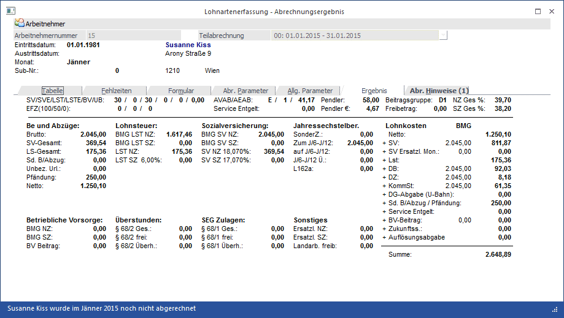

In diesem Fenster, dass über den Menüpunkt
1 Abrechnen
1 Einzelabrechnung
oder Schnellaufruf
1 STRG + E
durch Anwahl des Registers
1 Ergebnis
aufgerufen wird, wird das Abrechnungsergebnis aufgrund der erfassten Lohnarten sichtbar.
In diesem Fenster werden alle Werte angezeigt, die sich aus der Abrechnung ergeben:

Allgemeine Informationen
Neben den Informationen über den abgerechneten Arbeitnehmer werden folgende Informationen angezeigt:
Ø SV/SVE/LST/LSTE/BV/UB
Sozialversicherungstage
SV-Tage für Ersatzleistungen
Lohnsteuertage
LST-Tage bei Ersatzleistungen
Betriebsvorsorge - Tage
U-Bahnsteuer (Betrag)
Ø EFZ (100/50/0)
Tage für Entgeltfortzahlung
Ø AVAB/AEAB
Alleinverdiener- / Alleinerzieher- Absetzbetrag / Anzahl der Kinder / Abzugsbetrag (inkl. Kinderzuschlag) für AVAB/AEAB
Ø Service Entgelt
Es wird der Betrag ausgewiesen, der für das Service Entgelt (nur im November) vom Nettobetrag abgezogen wird.
Ø Freibetrag:
Lohnsteuerfreibetrag im Monat lt. Arbeitnehmerstamm. Der Wert wird entsprechend der Lohnsteuertage aliquotiert.
Ø Pendler
Pendlerpauschale im Monat. Der Wert wird entsprechend der Lohnsteuertage aliquotiert.
Ø Pendler €:
Hier wird der in Abzug gebrachte Pendler-Euro angezeigt.
Ø Beitragsgruppe
Hier wird die Beitragsgruppe angezeigt, mit der der AN abgerechnet wird.
Ø NS Ges
%
SZ Ges %
Hier werden die SV-Gesamtprozente für Normalzahlung und Sonderzahlung ausgewiesen.
Be- und Abzüge
Ø Brutto
Bruttobezug: alle Bezüge exkl. Sachbezüge, inkl. Familienbeihilfe, Abzug.
Ø SV Gesamt
Ermittelte Sozialversicherung (inkl. KU etc.)
Ø LS Gesamt
Lohnsteuer für Normalzahlungen und für sonstige Bezüge gesamt.
Ø Sd.B/Abzug
Summe der Sonderbezüge/abzüge (Abrechnungsschema 4 + 5, Rollungsdifferenzen).
Ø Unbez. Url.
Hier wird der Betrag ausgewiesen, der als unbezahlter Urlaub abgerechnet wurde.
Ø Pfändung
Der gepfändete Betrag wird ausgewiesen.
Ø Netto
Nettoauszahlungsbetrag.
Lohnsteuer
Ø BMG LST NZ
Bemessungsgrundlage Lohnsteuer Normalzahlung.
Ø BMG LST SZ
Bemessungsgrundlage Lohnsteuer für Sonstige Bezüge (Versteuerung nach festen Prozentsätzen).
Ø LST NZ
Lohnsteuer Normalzahlung.
Ø LST SZ
Lohnsteuer Sonstige Bezüge, vor dem Betrag wird der Prozentsatz angedruckt, mit dem gerechnet wurde.
AV AN Reduzierung
Wenn ein AN einen Bruttobezug bis € 1.384,- (Wert für 2009) bezieht, dann wird der AV-Beitrag um 1 - 3 % verringert (ab 1. Juli 2008). In diesem Bereich des Abrechnungsergebnisses werden die Reduzierungen des AV-Beitrages in den Positionen
Ø SV NZ (X %)
und ggf.
Ø SV SZ (X %)
ausgewiesen, wobei statt X der jeweils zur Anwendung gekommene Prozentsatz angezeigt wird. Sofern eine Urlaubsersatzleistung abgerechnet wird, wird eine ggf. vorhandene AV-Reduzierung in der Position
Ø Ersatzleistung
ausgewiesen. Bei der Ersatzleistung wird kein Prozentsatz ausgewiesen, da sich der Reduzierungsbetrag aus mehreren Prozentsätzen ergeben kann (gilt sowohl für NZ als auch für SZ). Diese Reduzierungen vermindern den SV-Beitrag des AN.
Sozialversicherung
Ø BMG SV NZ
Sozialversicherungsbemessungsgrundlage Normalzahlung
Ø BMG SV SZ
Sozialversicherungsbemessungsgrundlage Sonderzahlung.
Ø SV NZ
Sozialaversicherungsbeitrag Normalzahlung, davor wird der verwendete NZ-Prozentsatz angedruckt
Hinweis:
Wenn beim Wert der SV NZ ein * angezeigt wird, dann handelt es sich bei der Abrechnung um eine Altersteilzeit. In diesem Fall stimmt der errechnete Wert nicht mit dem Prozentsatz der BMG überein, weil bei einer ATZ-Abrechnung der Dienstnehmer auch die KU und WF vom ATZ-DG-Anteil übernimmt.
Ø SV SZ
Sozialaversicherungsbeitrag Sonderzahlung, davor wird der verwendete SZ-Prozentsatz angedruckt
Ø Sachbezugsregel
Dieses Feld ist nur dann gefüllt, wenn die Sachbezugsregel (die Summe der SV exkl. Nebenbeträge darf max. 20% der Geldbezüge betragen, den übersteigenden Teil übernimmt der DG) in Anspruch genommen wird. Hier wird der SV-Anteil ausgewiesen, der bei der Sachbezugsregel vom DG übernommen wird.
Hinweis:
Dieser Wert kann auch dann gefüllt sein, wenn Kurzarbeit abgerechnet wird, und somit kein "Sachbezug" abgerechnet wird.
Ø BMG Ersatzl. NZ:
Hier wird die Bemessungsgrundlage von Ersatzleistungen Normalzahlung ausgewiesen, die anteilsmäßig in eine nachfolgende Abrechnungsperiode übernommen wird.
Ø BMG Ersatzl. SZ:
Hier wird die Bemessungsgrundlage von Ersatzleistungen Sonderzahlung ausgewiesen, die anteilsmäßig in eine nachfolgende Abrechnungsperiode übernommen wird.
Ø SV Ersatzl. NZ:
Hier wird die SV NZ für Ersatzleistungen ausgewiesen, die anteilsmäßig in eine nachfolgende Abrechnungsperiode übernommen wird.
Ø SV Ersatzl. SZ:
Hier wird die SV SZ für Ersatzleistungen ausgewiesen, die anteilsmäßig in eine nachfolgende Abrechnungsperiode übernommen wird.
Jahressechstelberechnung
Ø SonderZ
Gesamter Betrag aller Sonderzahlungen für diese Abrechnung
Ø zum J/6
Beträge der laufenden Abrechnung, die die Basis des Jahressechstels erhöhen.
Ø auf J/6
Sonstige Bezüge der laufenden Abrechnung, die unter die Sechstel-Bestimmung fallen.
Ø J/6 Ueberh.
Überschreitung des Jahressechstels durch die Sonstigen Bezüge der Abrechnung:
ü Positiv
Das Jahressechstel
wurde überschritten.
ü Negativ
Das Jahressechstel
wurde (in der Höhe des angezeigten Betrages) nicht zur Gänze ausgeschöpft - der
Betrag, der negativ angezeigt wird, kann noch bis zur Erreichung des
Jahressechstels ausgezahlt werden.
Ø L162a
Steuerfreie sonstige Bezüge der laufenden Abrechnung z.B. Beträge unter der Freigrenze von € 2.100,- oder dem Freibetrag von € 620,-.
ü Positiv
Der Betrag wird bei der
laufenden Abrechnung LSt-frei abgerechnet.
ü negativ
der Betrag (absolut)
wird für vorhergehende Bezüge nachverrechnet und ist im Feld BMG LST SZ
enthalten.
Ø auf J/6 § 67/7
In dieser Position wird der Betrag angeführt, der innerhalb des zusätzlichen J/6 (erhöht um 15 %) als Sonderzahlung gemäß § 67/7 (Einstellung in der Lohnart) abgerechnet wurde.
Ø J/6 Ü. § 67/7
In dieser Position wird der J/6-Überhang des zusätzlichen J/6 gemäß § 67/7 angezeigt, wobei es hier 2 Möglichkeiten gibt:
ü Betrag ist positiv
Das
zusätzliche Jahressechstel wurde überschritten.
ü Betrag ist negativ
Das
Jahressechstel wurde (in der Höhe des angezeigten Betrages) nicht zur Gänze
ausgeschöpft - der Betrag, der negativ angezeigt wird, kann noch bis zur
Erreichung des zusätzlichen Jahressechstels ausgezahlt werden.
Betriebliche Vorsorge
Ø BMG NZ:
Hier wird die Bemessungsgrundlage Normalzahlung für die Mitarbeiter Vorsorge angezeigt.
Ø BMG SZ:
Hier wird die Bemessungsgrundlage Sonderzahlung für die Mitarbeiter Vorsorge angezeigt.
Ø BV-Beitrag
Hier wird der errechnete Beitrag für die Betriebliche Vorsorge angezeigt.
Überstunden
Ø § 68/2 Gesamt
Es wird der Gesamtbetrag der Bezüge, die mit Abrechnungsschema 2 abgerechnet wurden, ausgewiesen.
Ø § 68/2 frei
Hier werden die ersten 5 Überstundenzuschläge maximal aber € 43,- ausgewiesen, die von der BMG LST NZ abgezogen werden.
Ø § 68/2 Überhang:
Hier wird der Betrag des Überstundenzuschlages ausgewiesen, der der Tarifbesteuerung unterworfen wird.
SEG Zulagen
Ø § 68/1 Gesamt:
Hier wird der Betrag ausgewiesen, der mit Abrechnungsschema 1 abgerechnet wurde.
Ø § 68/1 frei
Steuerfreie Zulagen lt. § 68/1 = Beträge, die mit Abrechnungsschema 1 abgerechnet wurden und innerhalb der Freigrenze liegen.
Ø § 68/1 Überhang
Hier wird der Betrag ausgewiesen, der mit Abrechnungsschema 1 abgerechnet wurde, der aber den Freibetrag übersteigt.
Sonstiges
Ø Ersatzl. NZ
Beträge, die mit Abrechnungsschema 3 (Ersatzleistungen) abgerechnet wurden.
Ø Erstzl. SZ
Beträge, die mit Abrechnungsschema 28 (Ersatzleistung SZ) abgerechnet wurden.
Ø Landarb. Freib.
Hier wird der als Landarbeiter-Freibetrag abgezogene Betrag ausgewiesen. Dieser Wert ist nur dann gefüllt, wenn die Checkbox "Landarbeiterfreibetrag" im AN-Stamm aktiviert ist.
Lohnkosten
Hier werden die einzelnen Positionen aufgeführt, die für den abzurechnenden AN anfallen, wobei bei den relevanten Positionen auch die entsprechende Bemessungsgrundlage (die zur Berechnung herangezogen wird) angezeigt wird:
Ø Netto (Auszahlungsbetrag)
Ø SV-Gesamtbeitrag (DN- + DG-Anteil)
Ø SV Ersatzl. Mon. (SV für Ersatzleistungen, die in eine nachfolgende Abrechnungsperiode übernommen wird)
Ø LSt (Lohnsteuer)
Ø DB (Dienstgeberbeitrag ohne Berücksichtigung der Freibetrages)
Ø DZ
Ø KommSt. (Kommunalsteuer ohne Berücksichtigung des Freibetrages)
Ø U-Bahn (U-Bahn-Steuer)
Ø Sd. B/Abzug (Aconti, Rollungsdifferenzen)
Ø Service Entgelt
Ø BV-Beitrag (Betriebliche Vorsorge - Abfertigung NEU)
Ø Zukunftss. (Zukunftssicherungsbeitrag gesamt)
Ø Pfändung (Pfändungsbetrag, der vom Netto abgezogen wird)
Daraus ergibt sich der Gesamtbetrag, der für den AN aufgewendet werden muss.
Durch Drücken der F5-Taste kann die Erfassung des nächsten AN vorgenommen werden.